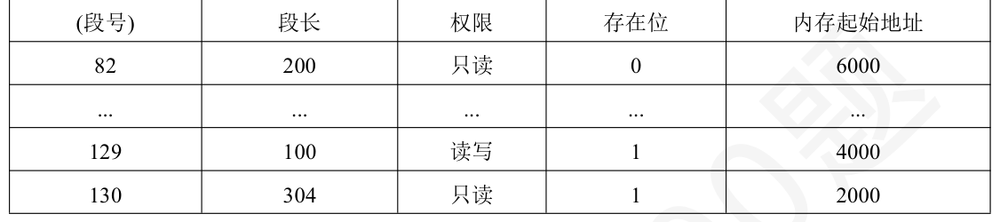

第 61 题
以下替换算法可能产生“Belady 异常”的是（ ）。
A． 先进先出算法（FIFO） B． 最近最少使用算法（LRU） C． 随机替换算法 D． 最不经常使用算法（LFU） 答案与解析 答案：A
FIFO在特定访问序列下可能出现增加Cache容量反而命中率下降的现象，即 “Belady异常”，A正确。补充：会发生“Belady异常”的有FIFO、CLOCK 和改进的CLOCK。
教材第 81 页 第 62 题
假设有一个块数为4 的Cache，采取全相联映射。起初Cache 中内容为空，接下来CPU 连续访问了以下主存块（均为十进制）：1，2，3，4，5，4，2，3，5，1。当Cache 采取LRU 替换策略时，命中率为（）。
A． 20% B． 30% C． 40% D． 50% 答案与解析 答案：C
LRU将最久未被访问的块替换，可以发现在第6 次访问4、第7 次访问2、第8次访问3和第9 次访问5 时命中，命中四次，命中率为4/10=40%。
教材第 81 页 第 63 题
关于Cache 写策略，若采用回写法，以下说法正确的是（ ）。
A． 数据写入Cache 的同时也写入主存 B． 只有当Cache 中的数据被替换时，才将其写回主存 C． 写操作速度较慢，因为需要等待主存写入完成 D． 不会出现Cache 与主存数据不一致的情况 答案与解析 答案：B
回写法中，数据写入Cache后不立即写入主存，只有当该数据所在的Cache块被替换时，才将其写回主存，写操作速度快，因为不需要每次都等待主存写入完成，但会存在Cache与主存数据不一致的时间段；数据写入Cache同时写入主存的是全写法；C描述的也是全写法的特点；写回法会出现数据不一致情况，A、C、D错误。
教材第 81 页 第 64 题
主存地址为32 位，按字节编址，主存和cache 之间采用直接映射方式，主存块大小为4 个字，每个字32 位，采用回写（writeback）方式，则能存放4K 字数据的Cache 的总容量的位数是（ ）
A． 148K 位 B． 158K 位 C． 146K 位 D． 147K 位 答案与解析 答案：A
Tag 位数：32-10-4=18；有效位：1，Dirty：1；行数：1K，(32*4+18+1+1)*1K =148K。
教材第 81 页 第 65 题
关于Cache 的全写法（写直达法）和写回法这两种写策略，以下说法正确的是（ ）。 I.采用写回法时，只有在第一次写入Cache 时需要写入主存II.采用全写法时，写命中时则同时写Cache 和辅存III．采用写回法时，每块Cache 都需要多加一位辅助位
A． 仅I、III B． 仅II C． 仅III D． I、II 和III 答案与解析 答案：C
III正确；II写命中时不写辅存而是主存；I写入主存不在第一次写入时，而在换出时，C正确。
教材第 81 页 第 66 题
假定页表有一个控制位C，用来表示对应页⾯是否可在Cache 缓存。C=1 表示可在Cache 缓存， C=0表示不可在Cache缓存。以下关于虚实地址转换时对C进行相关处理的描述，其中错误的是 （）。
A． 若装入位为0，则无需考虑C 的取值如何 B． 若修改位为1，则不管C 原来的值如何都将其清0 C． 若C=0，则根据转换后的地址直接访问主存而不访问Cache D． 若C=1，则根据转换后的地址先到Cache 中进行访问 答案与解析 答案：B
装入位为0表示不在主存中，故也一定不在Cache中，无需考虑，A正确。 C=0表示一定不在Cache，故无需访问Cache，C正确。C=1表示可能在Cache中，故要先在Cache中查找，D正确。B选项表示该页表项被修改过，对应的Cache块也会更改，故不能都清0，要根据新Cache块来决定，B错误。
教材第 81 页 第 67 题
假定编译器将赋值语句“x=x+3；”转换为指令“add xaddt，3”，其中xaddt 是x 对应的存储单元地址，若执行该指令的计算机采用页式虚拟存储管理方式，并配有相应的TLB，且Cache 使用直写方式，完成该指令的功能，需要访问主存的次数最少是（）次。
A． 2 B． 3 C． 0 D． 1 答案与解析 答案：D
D 取指令之后会根据x的地址去内存中取出x的数值。如果指令所在的页位于TLB中，则无需访问内存，直接根据TLB中的实页号去找相应的页；因为有cache的存在，所以会先访问cache，此时如果要寻找的页位于cache，则无需访问内存，直接在cache中取出x的值；取出x的值并运算完后，通过写直通法进行写入，因为写直通法是cache和内存一起写入，所以此时必须要访问一次内存，所以答案是1次，D正确。
教材第 81 页 第 68 题
以下关于虚拟存储器的说法，错误的是（ ）。
A． 虚拟存储器技术需要硬件和软件的协同支持 B． 页式虚拟存储器中，页面置换可能会导致抖动现象 C． 段式虚拟存储器便于实现程序的动态链接和共享 D． 虚拟存储器的容量只受外存容量的限制 答案与解析 答案：D
虚拟存储器的容量受计算机的地址结构（决定逻辑地址空间大小）和外存容量的共同限制，并非只受外存容量限制；虚拟存储器需要硬件（如MMU内存管理单元）和操作系统软件协同实现地址映射等功能；在页式虚拟存储器中，若页面置换算法不当，可能导致频繁换页，出现抖动现象；段式虚拟存储器按逻辑模块分段，便于实现程序的动态链接和共享，A、B、C正确，D错误。
教材第 82 页 第 69 题
某系统页大小为4KB，虚拟地址32 位，物理地址24 位，按字节编址，则页表项中页框号至少占（）位。
A． 12 B． 20 C． 24 D． 8 答案与解析 答案：A
物理地址24位，页内偏移12位（4KB =212 ），页框号= 24 - 12 = 12位，A正确。
教材第 82 页 第 70 题
在页式虚拟存储器中，若页面大小为4KB，某进程的逻辑地址空间大小为256MB，则该进程的页表项数量为（）。
A． 214 B． 216 C． 218 D． 220 答案与解析 答案：B
页面大小为4KB =212 字节，进程逻辑地址空间大小为256MB =228 字节，页表项数量=逻辑地址空间大小÷页面大小=228 ÷ 212 = 216 ，B正确。
教材第 82 页 第 71 题
已按勘误修正
某系统依次进行4 次访存操作的情况如下：
A． 6 B． 5 C． 8 D． 7 答案与解析 答案：A
操作I：TLB命中→物理地址，Cache未命中→1次访存。操作II：TLB未命中访问页表（1次访存）→缺页处理（视作1次访存）→重新执行→TLB命中→物理地址，Cache未命中（1次访存）。操作II共1 + 1 + 1 = 3次。操作III：TLB命中→物理地址，Cache命中→0次访存。操作IV：TLB未命中→查页表命中→物理地址，Cache未命中→2次访存。总计：1 + 3 + 0 + 2 = 6次，A正确。
勘误：序号④内容应为“④TLB 命中，Cache未命中”。
教材第 82 页 第 72 题
某个系统拥有48 位的虚拟地址和36 位的物理地址，按字节编址，并且主存储器的容量为128MB。如果系统中使用的页的大小为4096 字节，该地址空间能够支持的虚页数为（ ）个，实页数为（）个
A． 236 ，224 B． 248 ，236 C． 248 ，212 D． 236 ，212 答案与解析 答案：A
4096 =212 ，按字节编址，所以虚拟地址和物理地址中的低12 位被用作页内地址字段，虚页号的长度为48－12=36，所以虚拟地址空间能支持236 个虚页；而实页号的长度为36－ 12=24，所以物理地址空间能支持224 个实页。
教材第 82 页 第 73 题
下列命中组合情况中，一次访存过程中不可能发生的是（ ）。
A． TLB 命中、cache 命中、Page 命中 B． TLB 未命中、cache 命中、Page 命中 C． TLB 未命中、cache 未命中、Page 命中 D． TLB 未命中、cache 命中、Page 未命中 答案与解析 答案：D
Page 未命中，说明缺页，TLB 和cache 一定都是未命中的，所以D 不可能发生。
教材第 82 页 第 74 题
以下是有关缺页处理的叙述，其中错误的是（ ）
A． 若对应页表项中的有效位为0，则发生缺页 B． 缺页是一种外部中断，需要调用操作系统提供的中断服务程序来处理 C． 缺页处理过程中需根据页表中给出的磁盘地址去读磁盘数据 D． 缺页处理完后要重新执行发生缺页的指令 答案与解析 答案：B
缺页是内部异常，需要调用缺页异常处理程序来处理。
教材第 82 页 第 75 题
下列关于cache 缺失和TLB 缺失的说法，错误的是（ ）
A． cache 缺失无需进行进程切换 B． cache 缺失处理由硬件实现 C． tlb 缺失，需要执行tlb 缺失异常处理程序 D． tlb 缺失，cache 不一定缺失 答案与解析 答案：C
TLB 缺失可以用软件也可以用硬件来处理，处理过程相当简单，只要根据虚页号和页表基址寄存器的内容到主存中找到相应的页表项。若有效位为1，则把该项取到TLB 中即可；若有效位为0，则发出缺页异常。如果用软件来处理TLB 缺失，则通过产生TLB缺失异常，引出操作系统中相应的异常处理程序进行处理，异常处理结束后重，新执行当前指令页面缺失(缺页)处理是由软件来实现的。
教材第 82 页 第 76 题
段式虚拟存储器的基本原理是（ ）。
A． 将程序按逻辑模块分段，每段分配连续的内存空间 B． 将内存划分为固定大小的页，程序按页存储 C． 结合页式和段式的优点，先分段再分页 D． 所有程序共享一个段表，通过段号访问 答案与解析 答案：A
段式虚拟存储器将程序按逻辑模块（如代码段、数据段等）分段，每段在内存中分配连续的空间，通过段表进行地址映射，A正确；B描述的是页式虚拟存储器；C是段页式虚拟存储器；每个进程都有自己的段表，不是共享一个段表，B、C、D错误。
教材第 83 页 第 77 题
已按勘误修正
某进程的段表内容如下所示访问并修改<段号：段内地址>=<082H: 130H>的逻辑地址的数据时，进行地址转换的结果是（ ）

A． 段缺失异常 B． 越权异常 C． 越界异常 D． 得到内存地址2304 答案与解析 答案：C
082H 转成10 进制是130，此时查段表，存在位是1，段长是304，而此时段内地址为130H，转成十进制为256*1+3 * 16 = 304，段内地址从0 开始的，304 是第305 号单元，305>304发生越界异常。思考：若把段内地址130H 改为12FH，答案是什么？（越权）总结： •要分清十进制和16 进制，页表和段表中的页号和段号往往是连续排列，所以是十进制，题目中可能会给16 进制，要注意转换，进制统一后，需要考虑段（页）表长度，看段（页）号是否超出段表长度，超出发生越界异常。 •确定好段（页）表项，看存在位是1 还是0，若是0，可知段（页）不在内存，发生段缺失异常。 • 若是段式，需要考虑段长，同样需要考虑16 进制和10 进制的转换，以及下标问题。举例：若段长为100，那么段内地址是0-99，100 即发生越界异常。 • 以上都正常，最后还需要查看权限信息，本题中访问并修改，那么涉及写读和写权限，只读权限的话会发生越权异常。
勘误修正： 解析勘误补充：082H 转成十进制是130，此时查段表，存在位是1，段长是304。
勘误：解析勘误补充：082H 转成十进制是130，此时查段表，存在位是1，段长是304。
教材第 83 页 第 78 题
以下是有关段式存储管理的叙述，其中错误的是（ ）
A． 段是逻辑结构上相对独立的程序块，因此段是可变长的 B． 按程序中实际的段来分配主存，所以分配后的存储块是可变长的 C． 每个段表项必须记录对应段在主存的起始位置和段的长度 D． 分段方式对低级语言程序员和编译器来说是透明的 答案与解析 答案：D
低级语言程序员在编程时要指明段号，分段方式对其并不是透明的。
教材第 83 页 第 79 题
某段页式虚拟存储器系统中，段表项大小为4 字节，页表项大小也为4 字节。若某进程的段表中有8 个段表项，平均每个段的页表有32 个页表项，则该进程的段表和页表共占用内存空间大小是 （）。
A． 512 字节 B． 1024 字节 C． 1056 字节 D． 2048 字节 答案与解析 答案：C
段表占用空间=段表项数量×段表项大小= 8×4 = 32字节；页表占用空间= 段表项数量×平均每个段的页表项数量×页表项大小= 8×32×4 = 1024字节；段表和页表共占用空间= 32 + 1024 = 1056字节，C正确。 【答案速对】 ADCCCADCCCABBBCBABACABCDCCCBBCACBCCDBADBDA
教材第 83 页